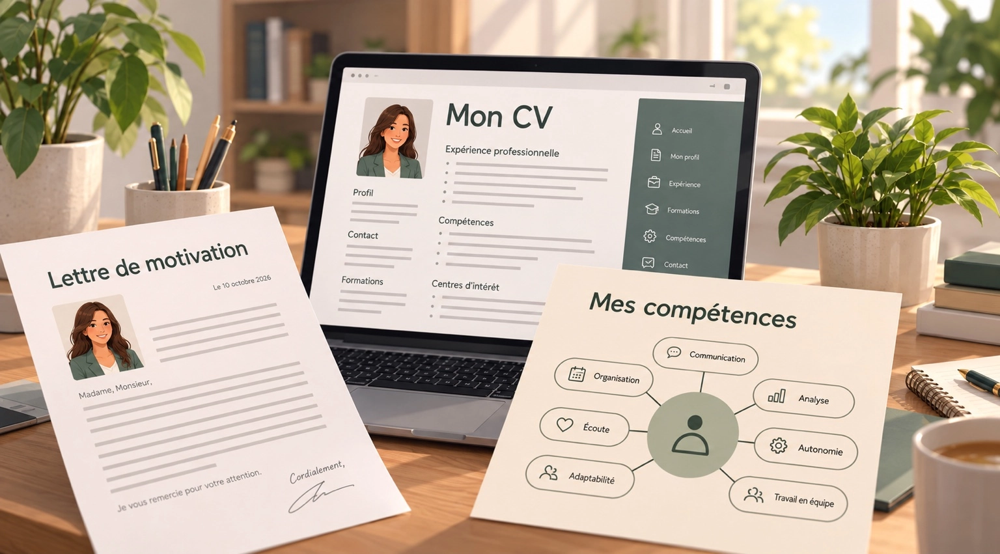

Autisme & emploi
Un accompagnement vers l’emploi adapté à votre parcours
Pour construire un projet professionnel qui vous correspond, en tenant compte de vos forces, de vos besoins et de votre rythme.
Pour qui ?
Avancer dans votre parcours professionnel.
Cet accompagnement s’adresse aux adultes avec autisme ainsi qu’aux personnes disposant d’une reconnaissance de handicap qui souhaitent :
Accompagnement individuel
Un soutien personnalisé
Les séances individuelles permettent d’aborder votre situation de manière personnalisée et confidentielle. Nous travaillons ensemble sur vos objectifs, à votre rythme.
- Élaboration d’un projet professionnel
- Identification de vos forces et compétences
- Préparation à la recherche d’emploi
- Confiance en soi et affirmation de ses besoins
- Préparation aux entretiens d’embauche
- Adaptation aux exigences du monde du travail

Ateliers & cours collectifs
Échanger, apprendre et progresser ensemble
Des ateliers en petits groupes, dans un espace sécurisé et bienveillant, pour développer des compétences concrètes et échanger avec d’autres personnes aux réalités similaires.
- Habiletés sociales dans la sphère professionnelle
- Fonctions exécutives et organisation
- Gestion émotionnelle
- Communication au travail
- Connaissance de soi et de ses compétences
- Stratégies facilitant l’insertion professionnelle
Outils concrets
Des outils concrets pour avancer
Afin de favoriser une progression adaptée à chaque situation, différents outils peuvent être proposés :

Une expertise au service de votre projet
Parce que votre potentiel mérite d’être reconnu
Mon approche repose sur une double expertise en psychologie du travail et en accompagnement des personnes avec autisme. L’objectif est de vous aider à mieux comprendre votre fonctionnement, à valoriser vos compétences et à développer des stratégies adaptées pour évoluer dans le monde professionnel avec davantage de confiance et de sérénité.